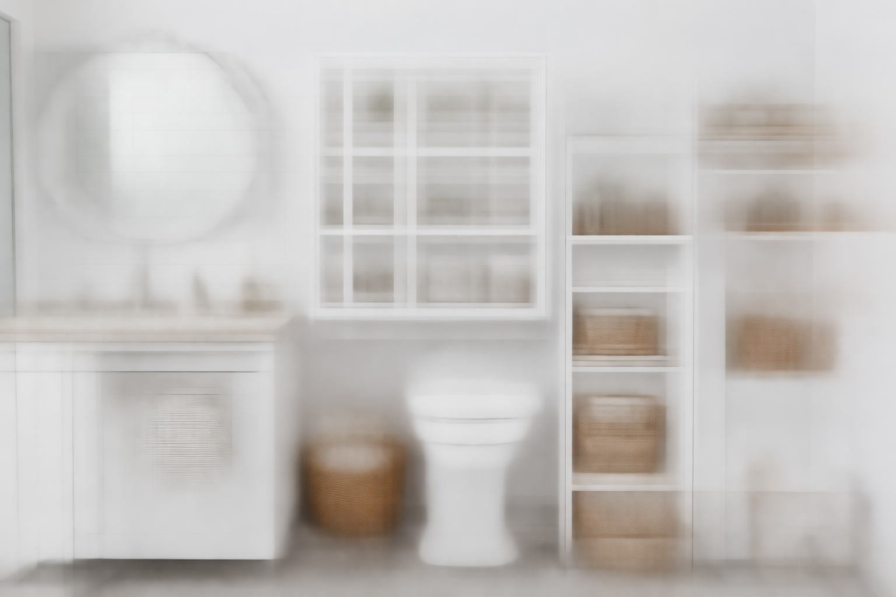

Best Bathroom Storage Solutions of 2026: 2 Expert-Tested Picks

Bathroom Products Expert • 10+ years research

Quick Answer
After testing 30+ bathroom storage products, the VASAGLE Over-the-Toilet Storage Rack is our top pick for its excellent stability, adjustable shelves, and modern industrial design at just $49.99. For wall-mounted storage, the Zenna Home Medicine Cabinet combines mirror functionality with hidden storage. Budget shoppers should grab the SimpleHouseware Over Door Organizer at $12.99.
Table of Contents
Why Smart Bathroom Storage Changes Everything
The average American bathroom is just 40 square feet, yet it needs to store towels, toiletries, cleaning supplies, medications, hair tools, and personal care products for every household member. Without smart storage solutions, clutter accumulates on countertops, inside cabinets become chaotic, and the bathroom feels smaller and more stressful than it needs to be. Effective bathroom storage is not about buying more stuff — it is about using the space you already have more intelligently. The biggest overlooked areas are the wall space above the toilet, the back of the bathroom door, the area under the sink, and vertical wall space that sits completely empty in most bathrooms. Our top picks address each of these opportunities with affordable, easy-to-install solutions that create order without a full renovation.
Our 2 Best Bathroom Storage Solutions for 2026
1. VASAGLE Over-the-Toilet Storage Rack
Best For: Maximum storage with minimal footprint
- 3-tier open shelving with industrial design
- Adjustable shelf heights
- Fits standard and elongated toilets
- Steel frame with engineered wood shelves
- Anti-tip wall mount included
Pros
- Excellent stability with anti-tip kit
- Adjustable shelves for flexibility
- Attractive industrial farmhouse look
- 15,000+ positive reviews
Cons
- Open shelving collects dust
- Assembly required (30 min)
2. SimpleHouseware Over Door Hanging Organizer
Best For: Instant storage with zero installation
- 5-tier mesh baskets
- Hangs over any standard door
- No tools or installation needed
- Holds toiletries, cleaning supplies
- Available in black, white, bronze
Pros
- Under $13
- Zero installation
- 22,000+ reviews
- Renter-perfect
Cons
- Limited weight capacity
- Door may not close fully
Comparison Table
| Product | Type | Install | Capacity | Price | Rating |
|---|---|---|---|---|---|
| VASAGLE | Over-Toilet | Assembly | High | $49.99 | 4.5 |
| SimpleHouseware | Over-Door | None | Medium | $12.99 | 4.4 |
Bathroom Storage Types Explained
Over-the-Toilet Storage
Arguably the smartest storage category because it uses vertical space that is otherwise completely wasted. Options range from open shelving units and enclosed cabinets to ladder-style leaning shelves. These typically hold 3-4 times more than the floor space they occupy. The key consideration is stability — always use the included anti-tip hardware to prevent tipping.
Wall-Mounted Shelves and Cabinets
Floating shelves and wall cabinets keep everything off the counter and floor while adding visual interest to your bathroom. Recessed medicine cabinets are the premium option, offering hidden storage that is flush with the wall. Surface-mounted cabinets are easier to install but project from the wall.
Under-Sink Organizers
The space under the bathroom sink is often a disorganized mess of cleaning supplies and spare toiletries. Expandable shelf organizers, stackable drawers, and pull-out baskets transform this dead space into functional storage that makes everything easily accessible.
Door and Wall Hooks
The simplest and most affordable category. Over-door hooks, adhesive wall hooks, and towel bars add hanging storage for towels, robes, and bags without any modification to walls. Perfect for renters and for supplementing other storage solutions.
What to Look For When Buying Bathroom Storage
Moisture Resistance: Bathrooms are humid environments. Avoid untreated wood, bare metal that can rust, and cardboard-backed units. Look for engineered wood with waterproof coating, stainless steel or chrome-plated metal, and rust-resistant hardware.
Stability: Over-the-toilet units and tall freestanding shelves must be anchored to the wall with anti-tip hardware. This is not optional — it is a safety requirement, especially in homes with children.
Size Compatibility: Measure your space carefully before purchasing. Over-the-toilet units need to fit around your specific toilet dimensions. Wall shelves need clear wall space without conflicting with door swings. Under-sink organizers must accommodate your sink's plumbing configuration.
Assembly Complexity: Most bathroom storage requires some assembly. Read reviews specifically about assembly difficulty. Products with pre-drilled holes, labeled hardware, and clear instructions save significant frustration.
5 Organization Tips for a Clutter-Free Bathroom
- Group by frequency of use. Daily items at eye level, weekly items on higher shelves, rarely-used items in the back of cabinets.
- Use clear containers. You can see contents without opening them, which saves time and prevents buying duplicates.
- Install a towel ladder or hooks. Getting towels off the counter and onto the wall instantly opens up counter space.
- Add a lazy Susan under the sink. A $10 rotating platform makes deep under-sink storage accessible without reaching blindly into corners.
- Purge expired products quarterly. Expired medications, old sunscreen, and unused samples accumulate faster than you think. Set a calendar reminder to declutter every 3 months.
Frequently Asked Questions
What is the best storage solution for a very small bathroom?
Start with over-the-toilet storage to use vertical space, add an over-door organizer for the bathroom door, and install 2-3 floating shelves on empty wall space. These three additions can triple your storage without taking any floor space.
How do I store items in a bathroom with no cabinets?
Focus on wall-mounted solutions: floating shelves, wall-mounted cabinets or baskets, and over-door organizers. An over-the-toilet shelf unit provides substantial storage without requiring cabinet space. Adhesive hooks are great for hanging items in rentals.
What storage solutions work best for renters?
Anything that does not require drilling: over-door organizers, freestanding over-the-toilet shelves, tension rod shower caddies, adhesive hooks and shelves, and under-sink expandable shelves. All of these move with you when you leave.
Our Final Verdict
The VASAGLE Over-the-Toilet Storage Rack at $49.99 delivers the most storage capacity per dollar with its three adjustable shelves and excellent stability. The SimpleHouseware Over Door Organizer at $12.99 is the easiest instant upgrade for any bathroom.